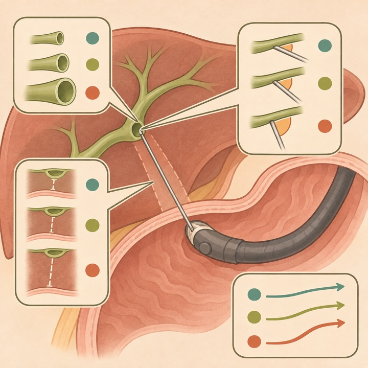
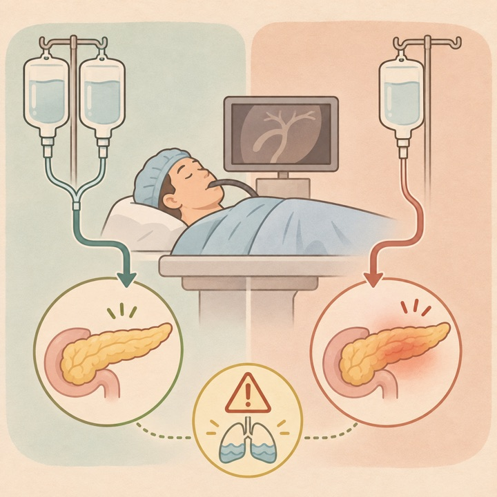
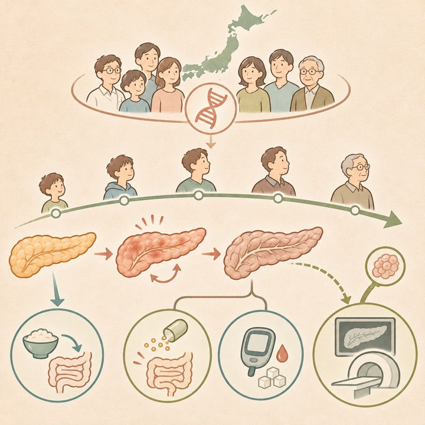
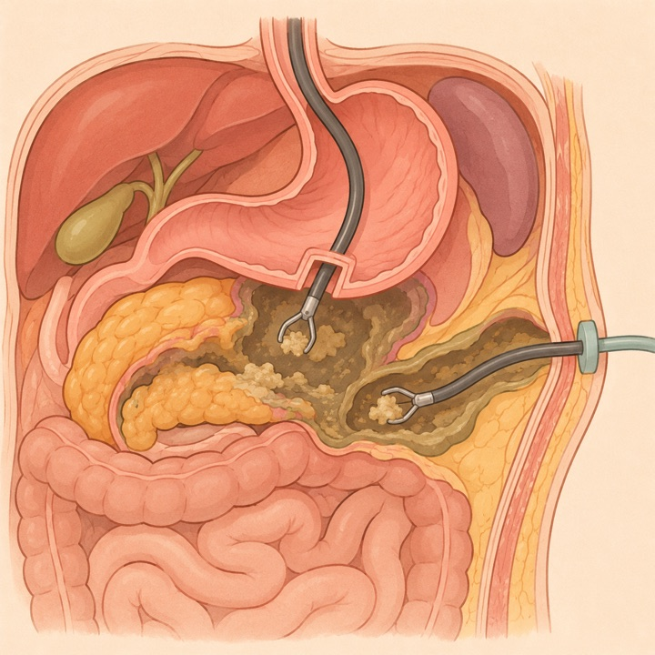
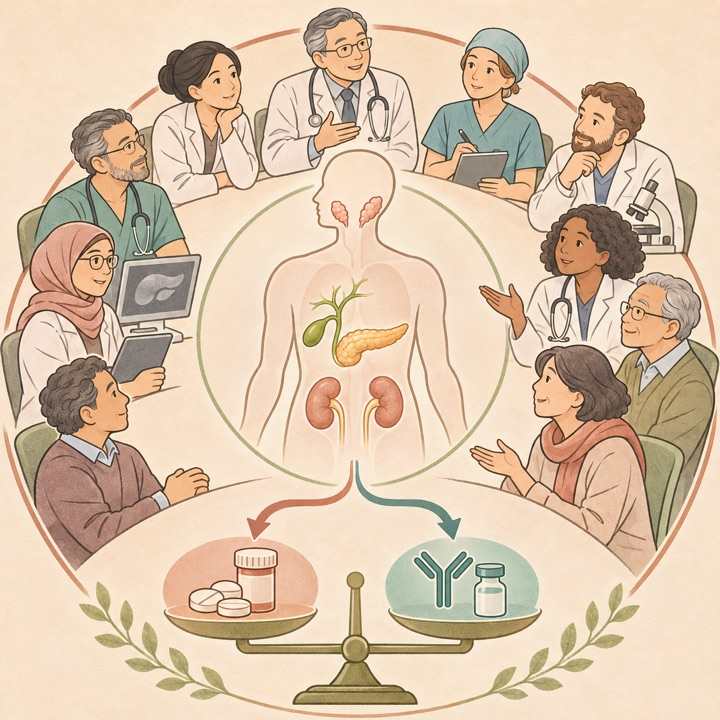
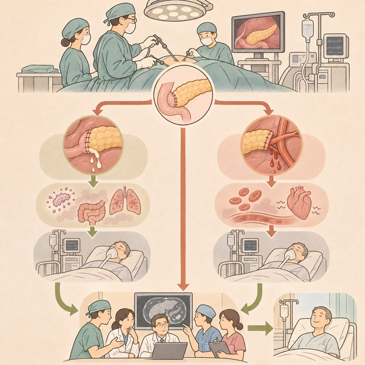
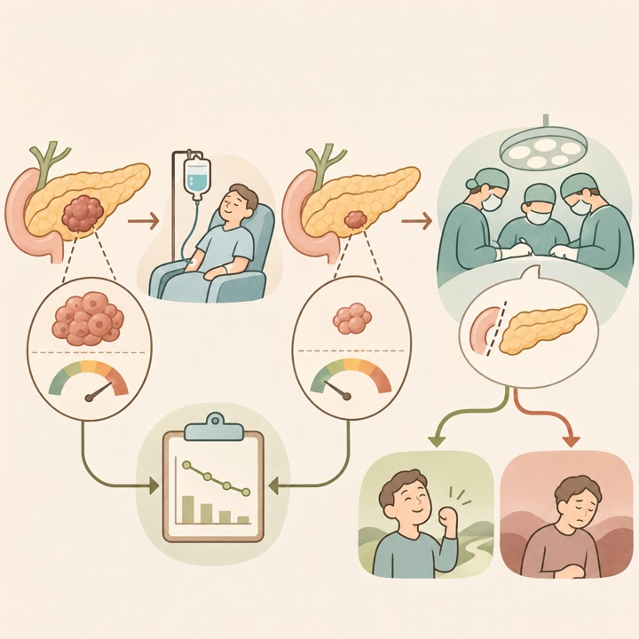
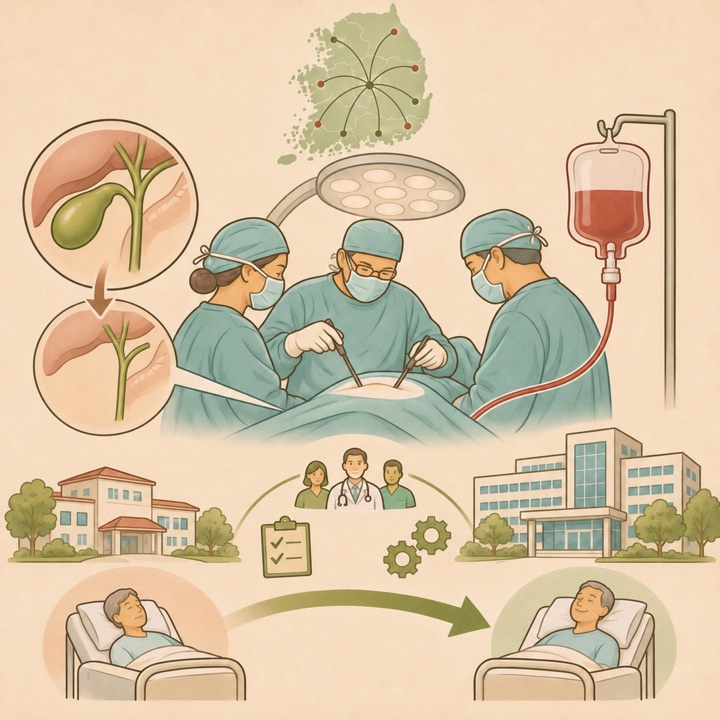

PRSS1遺伝性膵炎：全国コホートで癌リスクを再推定
CGH / Q1Nationwide cohort / 455
PDACの標準化罹患比32.2。糖尿病はPDAC発症と独立して関連しました。
Tokai University Pancreatobiliary Group
This Week's Pancreatobiliary Research Highlights
臨床的重要性、研究デザイン、診療への応用可能性を基準に4報を選定しました。IFとJCR quartileは2025年値（2026年公表、判明した最良カテゴリ）を使用し、確実に判定できない場合はQ4としています。
PDACの標準化罹患比32.2。糖尿病はPDAC発症と独立して関連しました。
補正AUC 0.927、高リスク群の初回失敗51.9%。外部検証前の仮説生成モデルです。
PEP 5.2%対13.6%、RR 0.39。ただしNSAIDs併用下の上乗せ効果は未証明です。
死亡率2.7%。POPF・出血の連鎖とfailure to rescue対策が中心課題です。
日本語: 単一高次施設のEUS-HGS 453件で、穿刺前に測定できる胆管径、針—胆管角、肝実質長から初回技術的不成功を予測しました。成功率88.3%、不成功11.7%。3因子モデルの見かけAUCは0.932、bootstrap補正AUC 0.927で、失敗率は低・中・高リスク群で1.7%、9.0%、51.9%でした。選択バイアスや時代効果を含む単施設後ろ向き開発研究であり、手技選択に用いる前に前向き多施設外部検証が必要です。
English: Three pre-puncture EUS measurements strongly separated first-attempt HGS failure risk, but this single-center internally validated model remains hypothesis-generating until prospective external validation.

日本語: 両群とも乳酸リンゲルを用いた初回ERCPのRCT 9試験、2,060例を統合しました。大量補液でPEPは5.2%対13.6%（RR 0.39）、中等症・重症PEPもRR 0.37でしたが、エビデンス確実性は低い〜非常に低いと評価されました。低risk of bias 3試験に限るとRR 0.52（95%CI 0.26–1.03）へ減弱し、体液過剰は6件のみで評価不十分です。直腸NSAIDs非使用時には有益な可能性がある一方、標準予防への上乗せ効果は未確定です。
English: Aggressive lactated Ringer hydration was associated with less PEP, but certainty was low, the estimate attenuated in low-bias trials, and incremental benefit alongside rectal NSAIDs remains unproven.

日本語: フランスの3つの国立参照検査機関で1996〜2025年に同定されたPRSS1病的variant保有者718人中、追跡可能な455人を解析しました。浸透率77.6%、症状発症年齢中央値12.5歳。PDACは22人、発症年齢中央値63.8歳で、累積リスクは50歳2.0%、60歳5.9%、標準化罹患比32.2でした。糖尿病はPDACと独立して関連（HR 6.8）。紹介・追跡欠損を伴う後ろ向き研究ですが、生涯フォローと年齢・糖尿病を考慮したサーベイランスを支持します。
English: This genetically confirmed national cohort found high penetrance, early exocrine and endocrine failure, and a markedly elevated age-dependent PDAC risk; diabetes identified a particularly high-risk subgroup.

日本語: 経胃的ネクロセクトミーが不十分または困難な後腹膜進展INP 12例で、既存の経皮ドレーン経路を拡張しflexible endoscopeを挿入しました。計74回、1例平均6.2回施行し、技術的成功100%、臨床的成功75%、90日死亡16.7%、手術移行1例でした。導入は診断後平均70.2日、在院日数平均127.9日です。選択された難治例の小規模単施設経験であり、比較対照もないため、標準化よりも解剖に応じたstep-upの補完手段として解釈すべきです。
English: Percutaneous endoscopic necrosectomy was feasible as a late, anatomy-directed escalation for peripheral retroperitoneal necrosis, but the 12-patient uncontrolled experience cannot establish comparative effectiveness.

The IgG4ward! Foundation guidelines on the treatment of IgG4-related disease；IgG4関連疾患治療の国際ガイドライン
日本語: 15か国の医師52人、患者8人、介護者1人、医療司書1人が参加し、系統的検索に基づく28の治療statementを作成しました。80%超の賛同をconsensusとし、22項目が達成しました。近年の2つのphase III RCTを反映した2015年以来の大幅更新ですが、多くのstatementはなお低水準エビデンスに依存します。自己免疫性膵炎・IgG4関連硬化性胆管炎を含む多臓器疾患として、寛解導入、再発予防、steroid-sparing治療を個別化する枠組みです。
English: A geographically and professionally diverse panel produced 28 evidence-graded statements, with consensus on 22; phase III trials have advanced the field, although many recommendations still rest on low-level evidence.

日本語: IGoMIPS registryの低侵襲膵切除3,590例をISGPS分類でroot-cause解析しました。死亡率は全体2.7%、MIPD 5.9%、左膵切除0.8%、全膵切除4.8%で、実質温存切除後は0件でした。約3分の2が複数の膵切除特異的合併症の連鎖（PPM 2）で、主にPOPFと膵切除後出血が関与しました。年齢とASA-PS 3以上も独立予測因子でした。観察registryですが、予防だけでなく早期認識・救命体制を含むfailure-to-rescue対策を施設品質指標として示唆します。
English: Death after minimally invasive pancreatectomy was usually the end of a cascade involving fistula and hemorrhage, shifting quality improvement toward prevention, early recognition, and failure-to-rescue systems.

日本語: 解剖学的切除可能PDACにNAT後切除を行った5施設623例で、腫瘍径とCA19-9を組み合わせるMetro-Pancreasを評価しました。診断時OUTは42.2%で、術後OSはIN 34.8か月に対し29.5か月。NAT後再評価ではOUT対INのOSが15.8対36.7か月と分離が拡大し、OUTからINへ再分類された患者は当初INと同等の予後でした。切除到達例のみの後ろ向き解析で、治療選択への前向き検証が必要ですが、固定的な診断時分類より動的再評価の価値を示します。
English: Metro-Pancreas separated postoperative prognosis more strongly after neoadjuvant therapy than at diagnosis, and conversion from OUT to IN tracked outcomes comparable with baseline IN disease.

日本語: 韓国National Health Insurance Serviceから2012〜2020年の胆道手術641,915例を解析しました。30日死亡は0.5%から0.3%へ低下。輸血量カテゴリが増えるほど粗死亡率は上昇しました。最高volume施設は最低volume施設より輸血率が高い一方（4.8%対3.9%）、輸血例の粗死亡は低値でした（3.3%対4.4%）。手術複雑度・重症度による強い交絡があり因果推論はできませんが、複雑胆道手術の選択的集約化と輸血適正化を検討する基盤になります。
English: Mortality after biliary surgery fell nationally; transfusion marked higher risk, while high-volume hospitals had lower crude mortality among transfused patients, supporting further study of selective centralization rather than causal claims.

2026年11月9日〜15日に初回公開または重要更新された登録から、胆膵疾患・胆膵内視鏡・肝移植に直接関連するものを選びました。ClinicalTrials.govへの登録は有効性や安全性の証明ではありません。JRCTは検索していません。
| 新規｜胆石性膵炎 | NCT07931755 軽症胆石性膵炎の早期腹腔鏡下胆嚢摘出 2026-11-12公開 / 前向き観察 / 50例 / Not yet recruiting。 |
|---|---|
| 新規｜胆膵EUS | NCT07928102 胆膵EUS自動レポートシステム 2026-11-10公開 / 420例 / Not yet recruiting。 |
| 新規｜進行膵癌 | NCT07928362 multimodal thermal therapy＋toripalimab＋GnP 2026-11-10公開 / 単群前向き / 56例 / Not yet recruiting。 |
| 新規｜PDAC肝転移 | NCT07933952 肝転移機序と臨床的意義 2026-11-12公開 / 観察研究 / 300例 / Recruiting。 |
| 新規｜局所進行PDAC | NCT07930936 IP-001免疫療法＋不可逆電気穿孔 2026-11-12公開 / Phase I / 10例 / Not yet recruiting。 |
| 新規｜PDAC | NCT07929961 MC001 first-in-human 2026-11-10公開 / Phase I / 80例 / Not yet recruiting。 |
| 新規｜膵腫瘤EUS | NCT07924540 EUS shear-wave elastography＋EUS-FNB 2026-11-09公開 / 62例 / Completed。 |
| 新規｜ERCP鎮静 | NCT07934355 HFNC対nasal positive airway pressure 2026-11-12公開 / 140例 / Enrolling by invitation。 |
| 新規｜早期膵癌 | NCT07925125 AI支援4D長軸PET（FDG＋FAPI） 2026-11-09公開 / 50例 / Recruiting。 |
| 新規｜EPLBD | NCT07932275 EPLBD後の長期胆管炎・結石再発 2026-11-12公開 / 全国後ろ向き研究 / 1,000例 / Recruiting。 |
| 新規｜KRAS G12D | NCT07926334 BI 4015092単剤・併用 2026-11-09公開 / Phase I / 200例 / Not yet recruiting。 |
| 新規｜IgG4-RD | NCT07925996 ワクチン免疫原性を高めるdermal priming 2026-11-09公開 / 28例 / Recruiting。 |
| 更新｜AIP対PDAC | NCT07900776 EUSによるAI鑑別 2026-11-09更新 / 690例 / Not yet recruiting。 |
| 更新｜PDAC | NCT04975217 糞便微生物移植 2026-11-10更新 / Early Phase I / 10例 / Suspended。 |
| 更新｜胆道癌 | NCT05564403 / ComboMATCH 化学療法±binimetinib 2026-11-12更新 / Phase II / 18例 / Active, not recruiting。 |
| 更新｜局所進行PDAC | NCT07097064 MR-guided adaptive SBRT 2026-11-12更新 / Phase II / Withdrawn（登録0例）。 |
| 更新｜KRAS G12D PDAC | NCT07522073 INCB161734＋化学療法対placebo＋化学療法 2026-11-13更新 / Phase III / 588例 / Recruiting。 |
| 更新｜膵癌疼痛 | NCT04951804 EUS-CPNでbupivacaine併用の有無を比較 2026-11-10更新 / 180例 / Recruiting。 |
| 更新｜進行胆道癌 | NCT05506943 / COMPANION-002 CTX-009＋paclitaxel 2026-11-10更新 / Phase II/III / 168例 / Active, not recruiting。 |
| 更新｜肝門部CCA | NCT06434493 陽子線・化学療法・肝移植の複合治療 2026-11-10更新 / 30例 / Recruiting。 |
| 更新｜悪性胆道狭窄 | NCT06750146 Hot AXIOS胆道ドレナージ 2026-11-12更新 / 162例 / Suspended。 |
| 更新｜切除後BRCA/PALB2 PDAC | NCT04858334 / APOLLO olaparib対placebo 2026-11-12更新 / Phase II / 152例 / Recruiting。 |
| 更新｜PEP予防 | NCT07781722 tacrolimus対placebo 2026-11-12更新 / Phase IV / 520例 / Recruiting。 |
| 更新｜肝移植輸液 | NCT07695363 / REFIL restrictive対心拍出量最適化liberal輸液 2026-11-12更新 / 1,364例 / Recruiting。 |
PubMedの2026年11月9日〜11月15日EDAT/新着索引に加え、Nature Reviews Gastroenterology & Hepatology、The Lancet Gastroenterology & Hepatology、Gastroenterology、Gut、Clinical Gastroenterology and Hepatology、Annals of Surgery、Journal of Hepato-Biliary-Pancreatic Sciences、Gastrointestinal Endoscopy、Endoscopy、Surgical Endoscopy、Endoscopy International Open、VideoGIE、Clinical Endoscopy、Digestive Endoscopy、DEN Open、iGIEの公式最新掲載・アーカイブページと、選定論文の出版社ページまたはDOI/PubMedを確認しました。アクセス制限のあるページは公式DOIとPubMed索引を突合しています。IFは2025 Journal Impact Factorを優先し、quartileを確実に確認できない誌は依頼方針に従いQ4と表示しています。速報・ahead of printの情報は更新されることがあります。
2026年11月2日〜11月8日版
2026年10月26日〜11月1日版
2026年10月19日〜10月25日版
2026年10月12日〜10月18日版
2026年10月5日〜10月11日版
2026年9月28日〜10月4日版
2026年9月21日〜9月27日版
2026年9月14日〜9月20日版
2026年9月9日〜9月15日版
2026年8月31日〜9月6日版
2026年8月24日〜8月30日版
2026年8月17日〜8月23日版
2026年8月10日〜8月16日版
2026年8月3日〜8月9日版
2026年7月27日〜8月2日版
2026年7月20日〜7月26日版
2026年7月13日〜7月19日版
2026年7月6日〜7月12日版
医療従事者向け情報： 本ページは医師・医学生・研究者向けの文献整理であり、患者向け広告、診療ガイドライン、個別の診断・治療助言ではありません。掲載内容は公開時点の情報に基づき、原著論文・最新ガイドライン・各施設の方針をご確認ください。